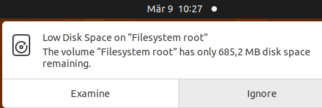

docker images --digests
Concerning... I start firing up the usual gaunlet of commands to try and figure out what the hell is going onmatoha@orin-nx-2:~$ df -h
Filesystem Size Used Avail Use% Mounted on
/dev/nvme0n1p1 98G 97G 0 100% /
tmpfs 7.7G 176K 7.7G 1% /dev/shm
tmpfs 3.1G 27M 3.1G 1% /run
tmpfs 5.0M 8.0K 5.0M 1% /run/lock
/dev/nvme0n1p10 63M 110K 63M 1% /boot/efi
/dev/mapper/crypt_ssd 196G 8.6G 178G 5% /ssd
tmpfs 1.6G 152K 1.6G 1% /run/user/1001
tmpfs 1.6G 108K 1.6G 1% /run/user/1000
matoha@orin-nx-2:~$ df -h
matoha@orin-nx-2:~$ du -sh * | sort -rh | head -10
1.7G Documents
924K genicam_xml_cache
24K Desktop
4.0K Videos
4.0K thinclient_drives
4.0K Templates
4.0K screen_startup.sh
4.0K Public
4.0K Pictures
4.0K Music
sudo du -xh / | sort -rh | head -10sudo apt install ncdu
ncdu
matoha@orin-nx-2:/$ sudo du -xh / | sort -rh | head -10
98G /
83G /var
80G /var/lib/containerd
81G /var/lib
41G /var/lib/containerd/io.containerd.snapshotter.v1.overlayfs/snapshots
41G /var/lib/containerd/io.containerd.snapshotter.v1.overlayfs
19G /var/lib/containerd/io.containerd.content.v1.content/blobs/sha256
19G /var/lib/containerd/io.containerd.content.v1.content/blobs
19G /var/lib/containerd/io.containerd.content.v1.content
15G /usr
docker system prune -amatoha@orin-nx-2:~# df -h
Filesystem Size Used Avail Use% Mounted on
/dev/nvme0n1p1 98G 22G 73G 23% /
tmpfs 7.7G 176K 7.7G 1% /dev/shm
tmpfs 3.1G 27M 3.1G 1% /run
tmpfs 5.0M 8.0K 5.0M 1% /run/lock
/dev/nvme0n1p10 63M 110K 63M 1% /boot/efi
/dev/mapper/crypt_ssd 196G 8.6G 178G 5% /ssd
tmpfs 1.6G 152K 1.6G 1% /run/user/1001
tmpfs 1.6G 108K 1.6G 1% /run/user/1000
matoha@orin-nx-2:~$ docker info | grep "Docker Root Dir"
Docker Root Dir: /ssd/docker
matoha@orin-nx-2:~$ sudo du -xh / 2>/dev/null | sort -rh | head -n 20
[sudo] password for matoha:
64G /
44G /var
43G /var/lib/containerd
43G /var/lib
30G /var/lib/containerd/io.containerd.snapshotter.v1.overlayfs/snapshots
30G /var/lib/containerd/io.containerd.snapshotter.v1.overlayfs
14G /usr
13G /var/lib/containerd/io.containerd.content.v1.content/blobs/sha256
13G /var/lib/containerd/io.containerd.content.v1.content/blobs
13G /var/lib/containerd/io.containerd.content.v1.content
6.5G /usr/lib
4.4G /usr/local/cuda-12.6
4.4G /usr/local
4.4G /opt
4.1G /usr/local/cuda-12.6/targets/aarch64-linux/lib
4.1G /usr/local/cuda-12.6/targets/aarch64-linux
4.1G /usr/local/cuda-12.6/targets
3.8G /usr/lib/aarch64-linux-gnu
3.0G /var/lib/containerd/io.containerd.snapshotter.v1.overlayfs/snapshots/93/fs/usr
3.0G /var/lib/containerd/io.containerd.snapshotter.v1.overlayfs/snapshots/93/fs
sudo systemctl stop docker containerd
sudo mv /var/lib/containerd /ssd/
sudo ln -s /ssd/containerd /var/lib/containerd
sudo systemctl start containerd docker
root@orin-nx-5:/ssd/docker/containers# cat /etc/containerd/config.toml
# Copyright 2018-2022 Docker Inc.
# Licensed under the Apache License, Version 2.0 (the "License");
# you may not use this file except in compliance with the License.
# You may obtain a copy of the License at
# http://www.apache.org/licenses/LICENSE-2.0
# Unless required by applicable law or agreed to in writing, software
# distributed under the License is distributed on an "AS IS" BASIS,
# WITHOUT WARRANTIES OR CONDITIONS OF ANY KIND, either express or implied.
# See the License for the specific language governing permissions and
# limitations under the License.
disabled_plugins = ["cri"]
#root = "/var/lib/containerd"
#state = "/run/containerd"
#subreaper = true
#oom_score = 0
#[grpc]
# address = "/run/containerd/containerd.sock"
# uid = 0
# gid = 0
#[debug]
# address = "/run/containerd/debug.sock"
# uid = 0
# gid = 0
# level = "info"
sudo systemctl stop docker
sudo rm -rf /ssd/docker/containers/*
sudo systemctl start docker
matoha@orin-nx-2:~# lsblk
NAME MAJ:MIN RM SIZE RO TYPE MOUNTPOINTS
zram0 252:0 0 978.5M 0 disk [SWAP]
zram1 252:1 0 978.5M 0 disk [SWAP]
zram2 252:2 0 978.5M 0 disk [SWAP]
zram3 252:3 0 978.5M 0 disk [SWAP]
zram4 252:4 0 978.5M 0 disk [SWAP]
zram5 252:5 0 978.5M 0 disk [SWAP]
zram6 252:6 0 978.5M 0 disk [SWAP]
zram7 252:7 0 978.5M 0 disk [SWAP]
nvme0n1 259:0 0 1.8T 0 disk
├─nvme0n1p1 259:1 0 100G 0 part /
├─nvme0n1p2 259:2 0 128M 0 part
├─nvme0n1p3 259:3 0 768K 0 part
├─nvme0n1p4 259:4 0 31.6M 0 part
├─nvme0n1p5 259:5 0 128M 0 part
├─nvme0n1p7 259:7 0 31.6M 0 part
├─nvme0n1p8 259:8 0 80M 0 part
├─nvme0n1p9 259:9 0 512K 0 part
├─nvme0n1p10 259:10 0 64M 0 part /boot/efi
├─nvme0n1p11 259:11 0 80M 0 part
├─nvme0n1p12 259:12 0 512K 0 part
├─nvme0n1p13 259:13 0 64M 0 part
├─nvme0n1p14 259:14 0 400M 0 part
├─nvme0n1p15 259:15 0 479.5M 0 part
└─nvme0n1p16 259:16 0 200G 0 part
└─crypt_ssd 253:0 0 200G 0 crypt /ssd
apt install cloud-guest-utils
sudo growpart /dev/nvme0n1 16
sudo cryptsetup resize crypt_ssd
sudo resize2fs /dev/mapper/crypt_ssd
sudo nmcli connection delete "ECommQA"
sudo nmcli connection add type wifi con-name "ECommQA" ssid "ECommQA"
sudo nmcli connection modify "ECommQA" \
wifi-sec.key-mgmt wpa-psk \
wifi-sec.psk 'PASSWORD HERE' \
802-11-wireless.hidden yes \
802-11-wireless.bssid B6:05:D6:57:E0:E3 \
connection.autoconnect yes \
connection.permissions ""
sudo systemctl restart NetworkManager
sudo nohup sh -c 'nmcli connection delete "ECommQA"; nmcli connection add type wifi con-name "ECommQA" ssid "ECommQA"; nmcli connection modify "ECommQA" wifi-sec.key-mgmt wpa-psk wifi-sec.psk "PASSWORD HERE" 802-11-wireless.hidden yes 802-11-wireless.bssid B6:05:D6:57:E0:E3 connection.autoconnect yes connection.permissions ""; systemctl restart NetworkManager' > /dev/null 2>&1 &